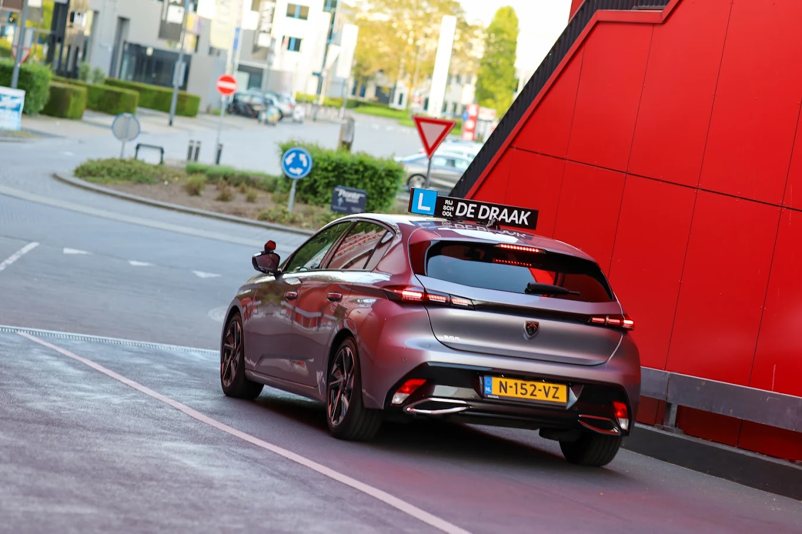
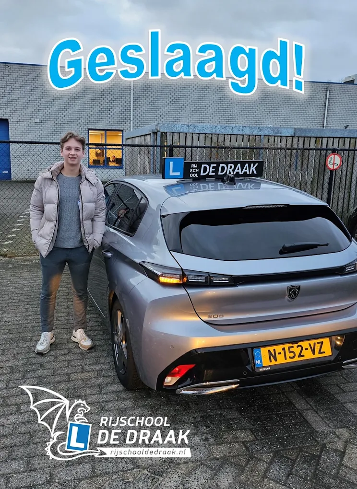

Autorijles · Rosmalen, Den Bosch en omstreken
Autorijles die om jou heen gebouwd wordt
Een modulair lesplan rond wat jij al kunt, in een Peugeot 308 met schakelbak. Ook onder de 18.

Het lesplan
Modulair leren: elke les een module verder
Je rijopleiding bij De Draak is opgeknipt in modules: voertuigbeheersing, bijzondere verrichtingen, binnen de bebouwde kom, buitenwegen, snelweg, zelfstandig rijden. Beheers je een module, dan door naar de volgende. Loop je ergens op vast, dan krijgt dat onderdeel extra aandacht in plaats van dat het lesboekje gewoon doorbladert.
Zo betaal je nooit voor lessen die je niet nodig hebt. Rogier zei het in zijn review het kortst: zonder onnodige lessen zijn examen gehaald.
- Lessen van 60 minuten. Liever blokken van 120 minuten? Dat kan, William stelt dan een pakket op maat samen.
- Opgehaald waar het jou uitkomt. Thuis, school of werk, in Rosmalen, Den Bosch en omstreken.
- Focus op zelfvertrouwen. Rustige uitleg, humor en ook benoemen wat al goed gaat.
Rijles onder de 18
Vanaf zestien al achter het stuur
Via 2toDrive begin je eerder en sta je sterker op je examen. Zo ziet die route eruit:
16 jaar: theorie
Vanaf je zestiende mag je theorie-examen doen. Slim om vroeg te doen: dan zit het erop voordat de praktijk begint.
16,5 jaar: rijlessen
Vanaf zestien en een half start je met praktijklessen bij De Draak, met hetzelfde persoonlijke lesplan als iedereen.
17 jaar: examen
Op je zeventiende doe je praktijkexamen. Tot je achttiende rijd je met een coach naast je, bijvoorbeeld je ouders.
Je ouders of een andere begeleider rijden mee tot je 18e via de officiële 2toDrive-regeling van de overheid.

De generale repetitie
Tussentijdse toets: oefenen bij het CBR zelf
Halverwege je opleiding kun je een tussentijdse toets doen: een proefexamen bij het CBR, afgenomen door een echte examinator. Je went aan de examensituatie, en voer je de bijzondere verrichtingen goed uit, dan hoef je die op het echte examen niet meer te laten zien.
Bij De Draak slaagde tot nu toe iedereen in één keer voor de tussentijdse toets: 43 van de 43. Landelijk is dat een uitzondering (bron: clickdrive.nl).
Examendag
Zo rijd je naar je examen: warmgedraaid
Een uur eerder opgehaald
William haalt je een uur voor je examen op. Samen rijd je rustig naar het CBR, zodat de zenuwen onderweg al zakken. Dat uur zit in de pakketprijs.
Je weet wat er komt
Ogentest, vragen over de auto, 35 minuten rijden met navigatie en bijzondere verrichtingen. Niets op het examen is nieuw voor je, want alles is geoefend.
85% slaagt in één keer
Van de eerste examens bij De Draak werd 85 procent in één keer gehaald: 29 van de 34 (bron: clickdrive.nl). De rest kreeg gewoon extra begeleiding tot het wél lukte.
Veelgestelde vragen
Alles wat leerlingen (en ouders) willen weten
Hoeveel lessen heb ik nodig?
Dat verschilt echt per persoon, en daarom werkt William niet met een vast aantal. Na je proefles en de eerste lessen ziet hij hoe snel je leert en krijg je een eerlijke inschatting. De pakketten van 30, 35 en 40 lessen dekken de meeste leerlingen; bijlessen kunnen altijd per tien of los.
Schakel ik of rijd ik automaat?
Je leert schakelen in de Peugeot 308. Met een schakelrijbewijs mag je straks álles rijden, ook automaat en elektrisch. Andersom niet.
Mag William mee tijdens mijn examen?
Ja, dat mag jij kiezen. Veel leerlingen vinden het fijn als hij achterin zit. En omdat hij zelf examens heeft afgenomen, weet hij precies wanneer hij stil moet zijn: de hele rit.
Wat moet ik regelen voordat ik kan starten?
Eigenlijk alleen je gezondheidsverklaring bij het CBR en een machtiging zodat De Draak je examen kan aanvragen. William loopt dit stap voor stap met je door tijdens je eerste les.
In welke plaatsen geeft De Draak les?
Rosmalen, 's-Hertogenbosch, Empel, Berlicum, Hintham en omstreken. Twijfel je of jouw dorp erbij hoort? App even, dan hoor je het direct.
Klaar voor de eerste meter?
Start je route vanaf poleposition
Eerst kennismaken? De proefles is gratis en zegt meer dan tien websites.